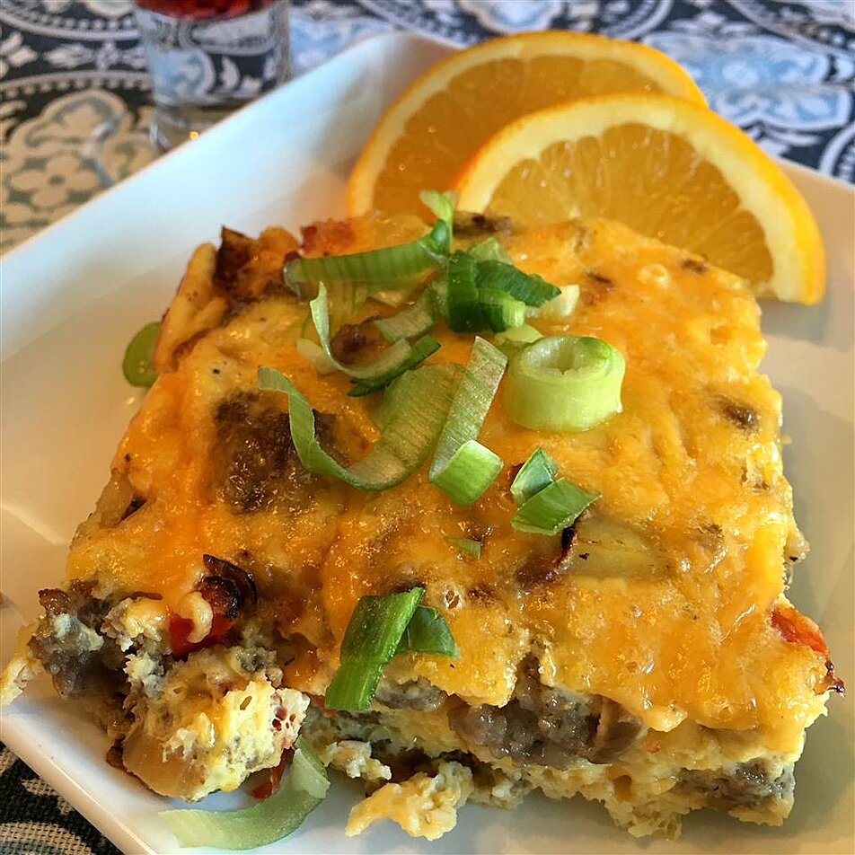

Hangover Helper

Description
This is a breakfast casserole perfect for curing any degree of hangover; also perfect for brunches and potlucks!
Ingredients
- cooking spray
- 1 tablespoon olive oil
- 1 large potato, peeled and diced
- ½ yellow onion, diced
- 9 ounces chorizo sausage, crumbled
- 8 eggs
- ½ cup milk (Optional)
- ½ red bell pepper, diced
- 1 ½ cups shredded Cheddar cheese, divided
Steps
- Preheat oven to 350 degrees F (175 degrees C). Grease a 9x13-inch casserole dish with cooking spray.
- Heat olive oil in a large skillet over medium heat. Add potato and onion; cook and stir until potatoes are golden brown and soft, about 10 minutes.
- Place chorizo in a nonstick skillet over medium heat; cook and stir until browned and crumbly, about 5 minutes.
- Whisk eggs with milk in a large bowl. Add red bell pepper, cooked potato and onion, and 1 cup Cheddar cheese to the egg mixture; pour into the casserole dish. Sprinkle 1/2 cup Cheddar cheese on top.
- Bake in the preheated oven until firm and cheese is melted and starting to brown, about 30 minutes. Cool before serving, about 10 minutes.